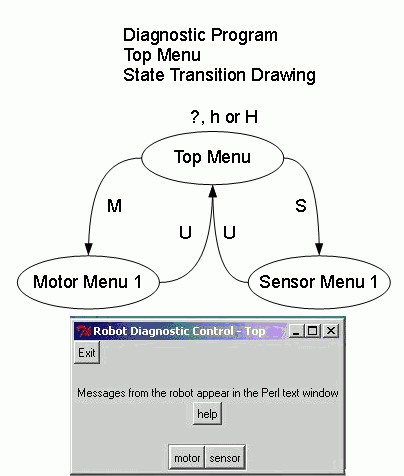
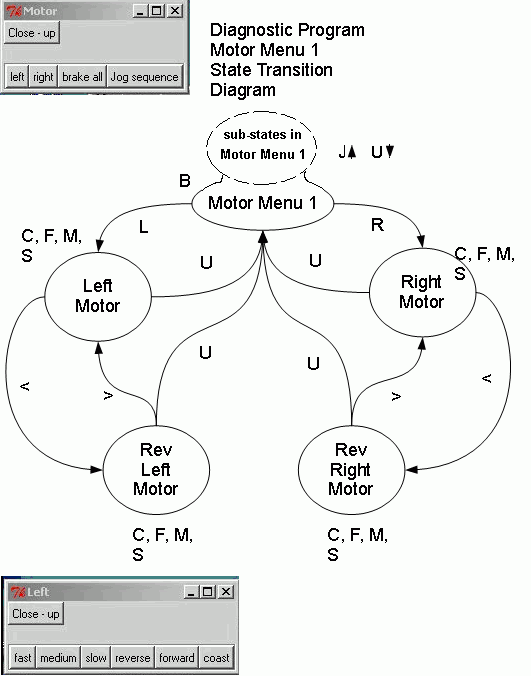

April 27, 2010 --- (rev May 14, 2010) (rev Oct. 26, 2010)
State transition diagram
The state transition diagram for the menu system of the Robot Diagnositc Program (with version 2.0 of the brainboard) is shown below. To avoid having the diagram get too complex it has been separated into a sequence of diagrams. This page has been modified to reflect version 4.002 of the diagnostic program.

The ovals represent states of the menu system for the diagnostic program.The lines with arrow heads represent a transition from one state to another and the reason for the transition. In most cases the reason is a key press. In most cases a new menu will be printed when the transition is made. For many keypresses the menu system stays in the same state but something else happens (could be text displayed in hyperterminal an/or an input/output change). There is not enough room on the diagram to list out the input output changes so I will make tables of lists of these changes. Rather than using hyperterminal it is also possible to use a GUI in Perl/tk and use mouse button clicks rather than keyboard enteries. Some screen shots of the GUI window are shown just to give a idea of what that option looks like.
The program has been changed to accommodate two independent jog sequences. The jog sequences differ from other pre-existing states in that they run an ongoing sequence of changes in motor direction until stopped and send a message with a jog count for each cycle in the sequence. Each jog sequence justified a new module so any changes in that jog sequence could be made independent of the other jog sequence. In the menu system the jog sequences can be thought of as sub-states of Motor Menu 1. Within the actual program structure the menu system has in fact become the default state of a more encompassing state machine. The jog sequences are not primarily driven by the menu system but by timing considerations. The new encompassing state machine is comprised of the following states:
jog1
jog2
process_command (default state)
stop_stateMenu system (state machine)
When the robot is reset (by a power up or by the PICkit2) the menu state machine starts in the state "Top Level Menu". A key press of an "M" (either case) causes a transition to the state "Motor Menu 1". A new menu is displayed so that from that state one can choose which motor to control (left or right). If "L" is choosen the menu system will transition to the "Left Motor" state. A new menu is displayed showing the possible actions at this point. None of the transistions to this point have included a change in input or output (apart from the USART). The printf() statements that comprise the actual messages displayed can be seen at menu.c .
The C functions that correspond to all the states in the state diagram given above are in the file process_command.c . There is a one to one corespondence between the states in the menu system and the following functions:
Each of those functions is passed a character. In most cases the character is a character receieved from the PC (via the USART). In the case of the automatic_threshold** functions they are simply passed a null character that is ignored. That is because the transition out of those functions is primarily based on sensor input and not on keyboard input. A flag variable auto_mode is used to keep track if the system is in automatic threshold mode. This can be thought of as a parallel state variable which indicates if the current state is one of the automatic_theshold** states or not.Each of those functions returns a value of type enum commands. The command will be either null (a zero) or a value from the list give in command_list.h . The commands are used to set the speed and direction of one of the motors or to get a signal ADC value from one of the sensors. The list is in an enum declaration and can be easily expanded.
get_command variable (is a fuction pointer)
A variable called get_command is used to keep track of the current state of the menu system. Since there is a one to one corraspondance between states and functions used to implement states the variable get_command contains the address of the function that will be called. This means that get_command is a pointer to functions. It is very easy to use! To change the state a simple assignement statement is used like:
get_command = get_command_char1;
When it is time to call the function pointed to by get_command any of the following can be used:
get_command(data_rec);
or
command = get_command(data_rec);
or
get_command(0);
The function call with a function pointer syntax looks just like a normal function call. The pointer name is used in place of a fuction name.
The declaration of the function pointer looks like this:
static enum commands (*get_command)(unsigned char data) = get_command_char1; // example of a
// pointer to a function
The qualifier static means the variable only has scope inside the current file.
enum commands is the returned variable type of any function this pointer can point to.
(*get_command) is the variable name with the indication that it is a pointer. The brackets indicate that the variable pointer is a pointer (rather than the return value being a pointer).
(unsigned char data) these brackets indicate that this is a pointer to a function rather than to other variables. The type inside the brackets indicate the type of the variable that is passed to functions that this pointer can point at.
= get_command_char1; this initializes the pointer so that it points at the function get_command_char1 (the function for the top level menu).The Function process_command()
This fucntion is called from main() in main.c. It is the only function in the project that makes fuction calls using the function pointer get_command. It is in the file process_command.c Since process_commend() is short I can include the whole function here.
| enum commands process_command(void)
{ enum commands command=null; unsigned char data_rec = '\0' ; if( auto_mode ) get_command(0); // in this
case is using sensors to find threshold
|
Note that the automatic threshold feature was an afterthought and not part of the original concept.
Normally auto_mode is zero. In that case a check is made to see if the USART has a character to interpret. If not the fuction returns a null as a command.
If the USART does contain a character it will be copied into data_rec. If data_rec contains anything but a null character then the function pointed to by get_command will be called and passed the value of data_rec. A command is returned and assigned to the variable command. The command is returned to main().
When auto_mode is 1 the system is in the process of automatically finding a good value for threshold. The states involved in that process primarily get input from the sensors rather than from the USART. In this case the function pointed to by get_command is called regardless of the current state of the USART. The function pointed to by get_command will be passed a null character which is just a dummy value. Those function only return a null value so the return value is ignored. The variable command is initialized as "null" and if not changed the "null" command will be returned to the calling function (always main()).